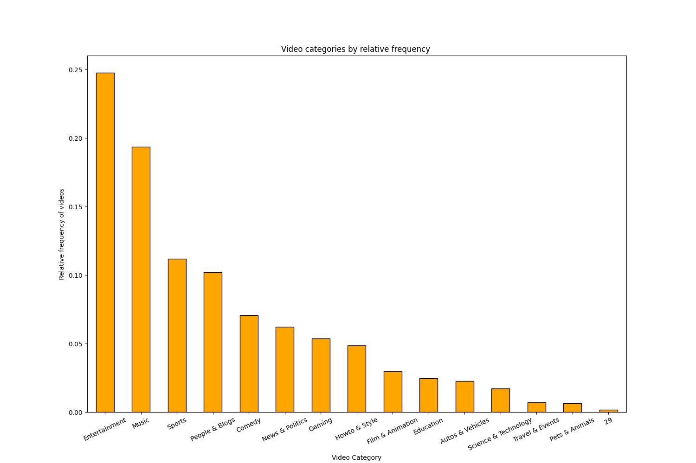
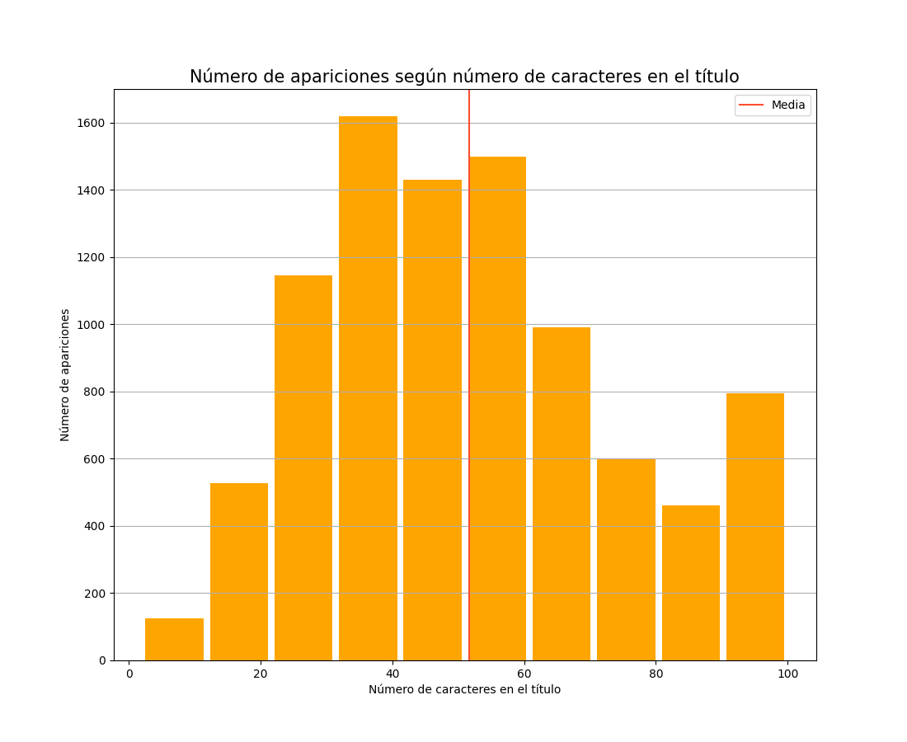
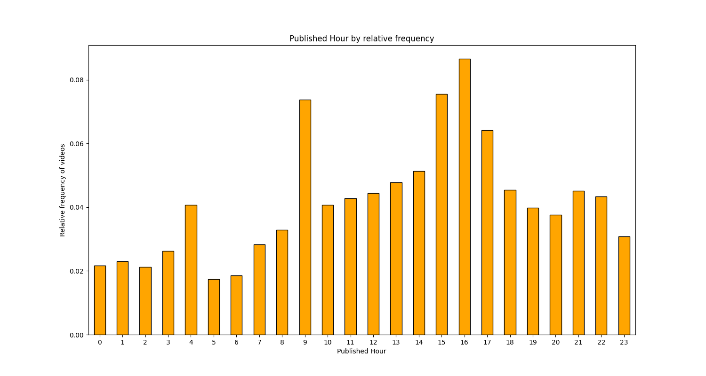

Resultados Obtenidos
Frecuencia de visualización de cada categoría a nivel mundial
Gráfica para analizar la longitud del título del vídeo
Gráfica para analizar la hora de publicación de un video por frecuencia
Top 10 videos más vistos

La idea de este proyecto es ayudar a empresas o particulares que utilicen YouTube con regularidad para saber cómo darle una mayor viralidad y rendimiento a los vídeos que deseen publicar, haciendo que incrementen el número de Me gusta y de visualizaciones.
Esto se llevará a cabo a través del uso de un Dataset que contiene los 200 vídeos más populares del día de varios meses y varias regiones (India, USA, Gran Bretaña, Alemania, Canadá, Francia, Rusia, Brasil, México, Corea del Sur y Japón); con diversos parámetros como el título del vídeo, el título del canal, fecha de publicación, etiquetas, visualizaciones, Me Gusta y No me Gusta, comentarios, etc.
Con una cantidad tan enorme de información (aproximadamente 803 mil vídeos), se requiere del Data Science y Big Data para procesar rápidamente una cantidad tan gigantesca de información.
A su vez necesitamos de Procesamiento Paralelo para conseguir procesar toda esta información lo más rápido y eficazmente posible
Para obtener las métricas que buscamos, partimos de un Dataset que contiene alrededor de 803k vídeos repartidos en 11 países (almacenados en ficheros CSV distintos para cada país) además de un informe con las categorías más populares de la región (almacenado en JSON) alojado en Kaggle , una plataforma gratuita para obtener diversos Dataset para trabajos de procesamiento de Big Data.
Cada vídeo almacenado en nuestro dataset está definido por las siguientes variables:
video_id, title, publishedAt, channelId, channelTitle, categoryId, trending_date, tags, view_count, likes, dislikes, comment_count, thumbnail_link, comments_disabled, ratings_disabled, description
Y cada categoría almacenada está definida por estas variables:
kind, etag, id, snippet (title, assignable, channelId)
Como podemos ver en las variables, hay varias que son relevantes para la finalidad de este proyecto, aunque también hay varias no tan útiles como la descripción del vídeo o el link hacia la miniatura del mismo. Y ya que hay ciertas variables que no nos van a resultar útiles (y que para obtener estadísticas globales el mismo vídeo puede aparecer varias veces), tendremos que hacer una limpieza de los datos que estaremos usando.
La aplicación está basada en una arquitectura de microservicios, creando pequeños scripts adicionales que hacen un estudio específico cada uno. La idea es tener una aplicación lo más modularizada posible donde sus módulos sean lo más independientes posible de los demás. También cada módulo generará una salida en un formato de gráficas y tablas, para que sea amigable con el usuario y más fácil de visualizar. Actualmente la aplicación completa obtiene las siguientes métricas:
Para ejecutar esta aplicación se requiere tener instalado Python y Apache Spark en modo local, además de diferentes librerías que permiten generar los gráficos de cada estudio. Los pasos para realizar la instalación son los siguientes (partiendo desde tener Python instalado y ejecutamos un SO Linux):
Somos un grupo de estudiantes de la Facultad de Informática de la Universidad Complutense de Madrid estudiando la asignatura Optativa General Cloud y Big Data durante el curso 2021-22